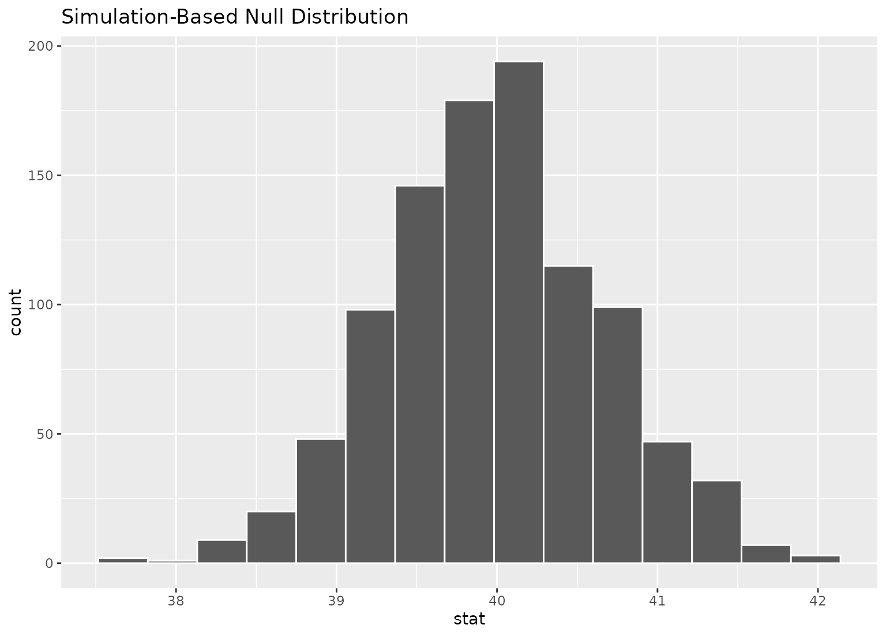
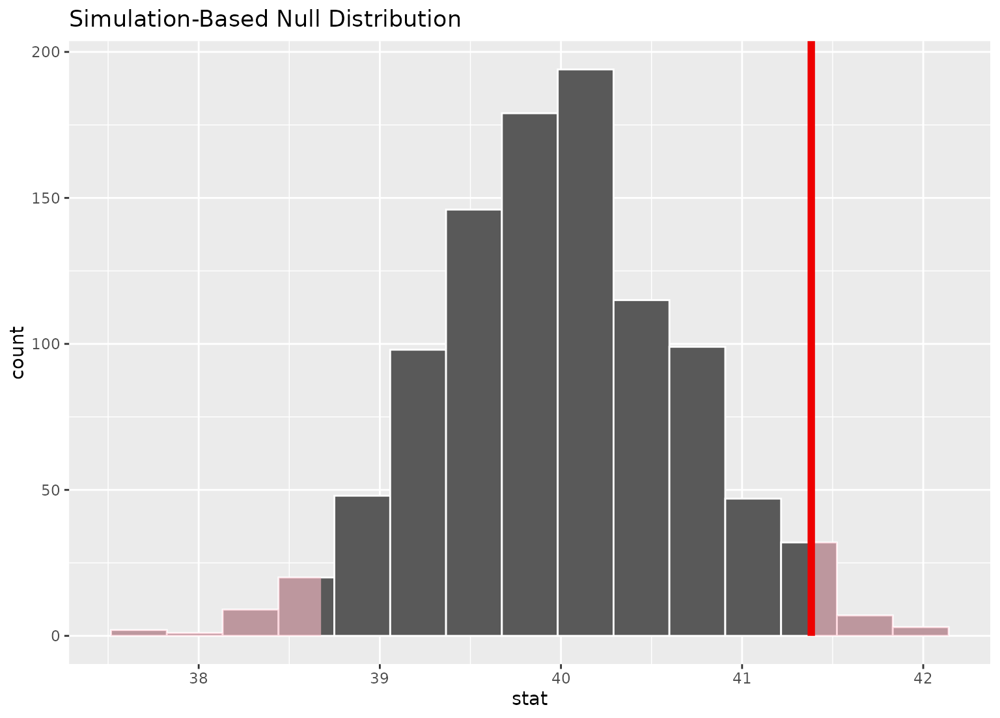
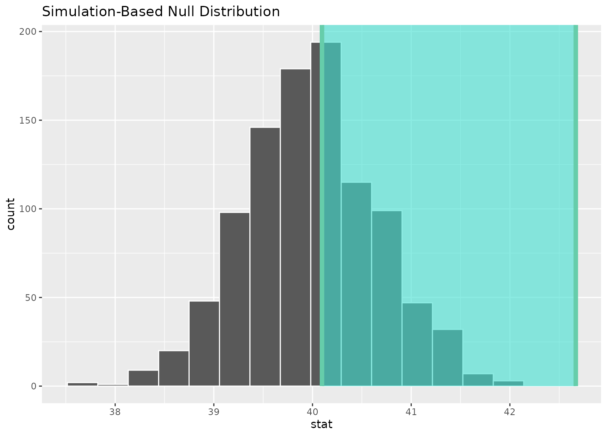
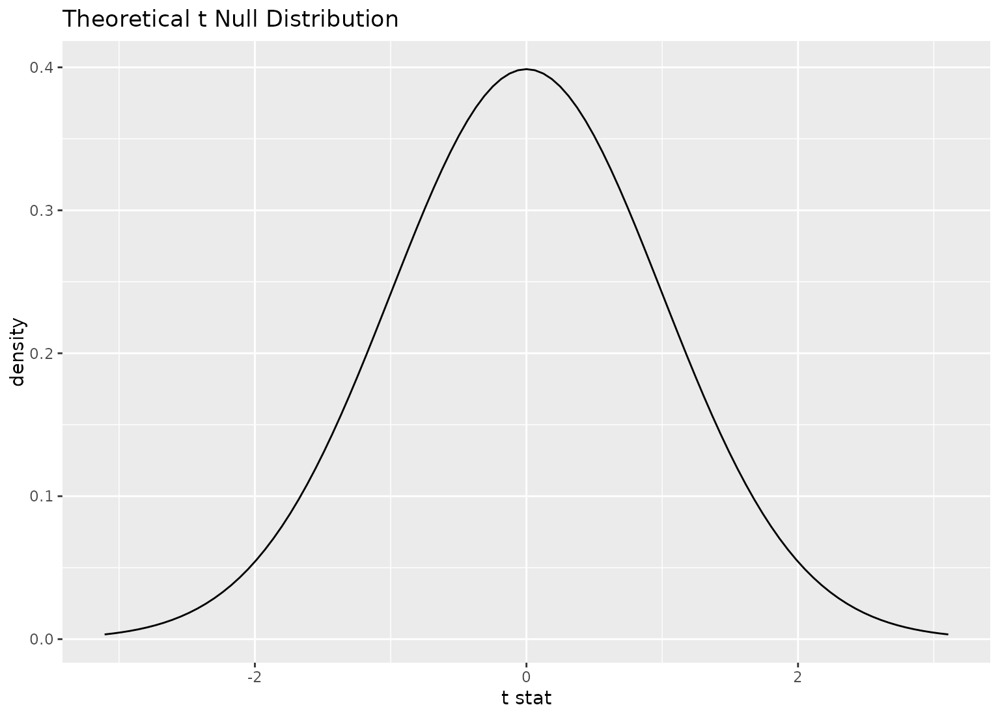
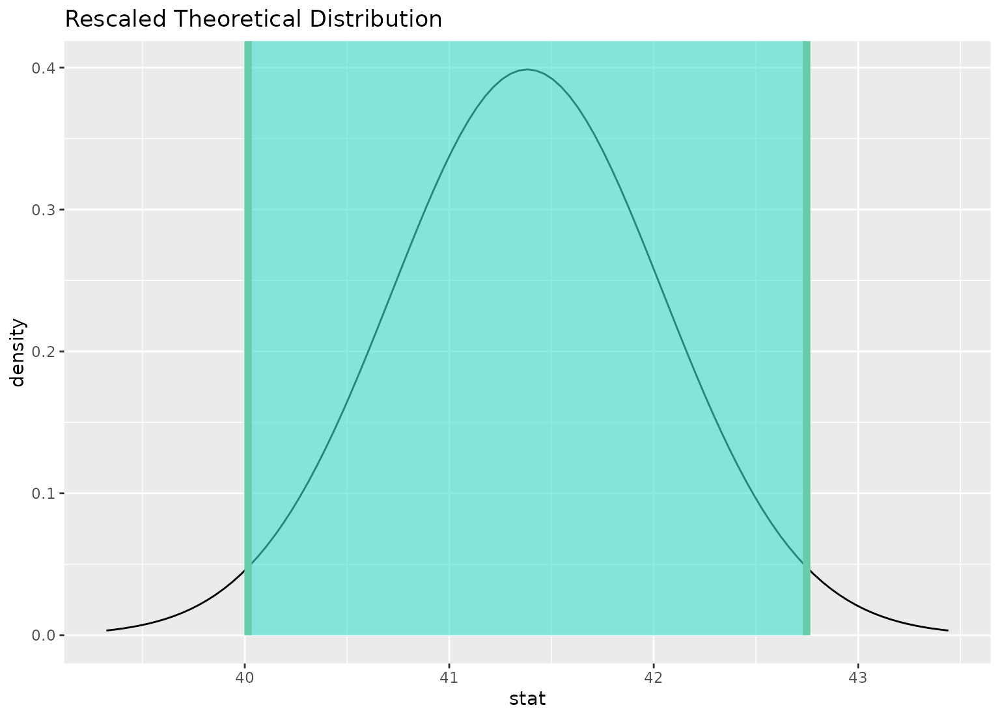
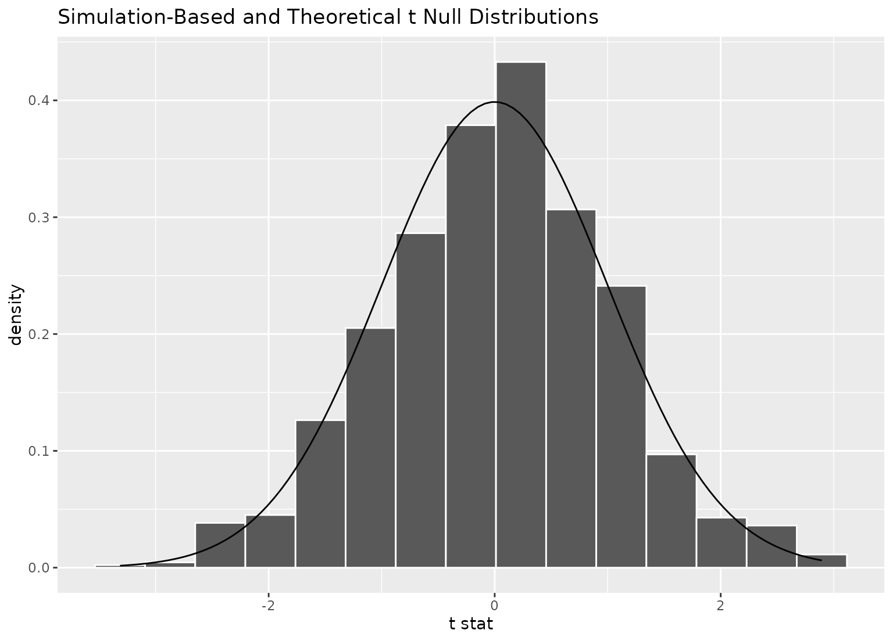
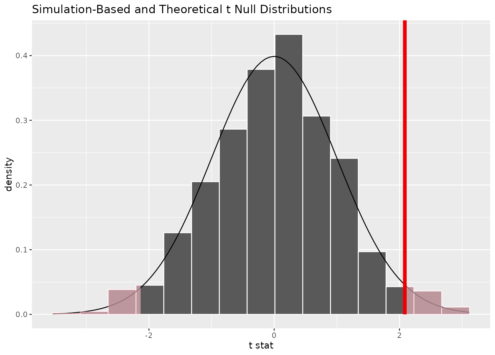
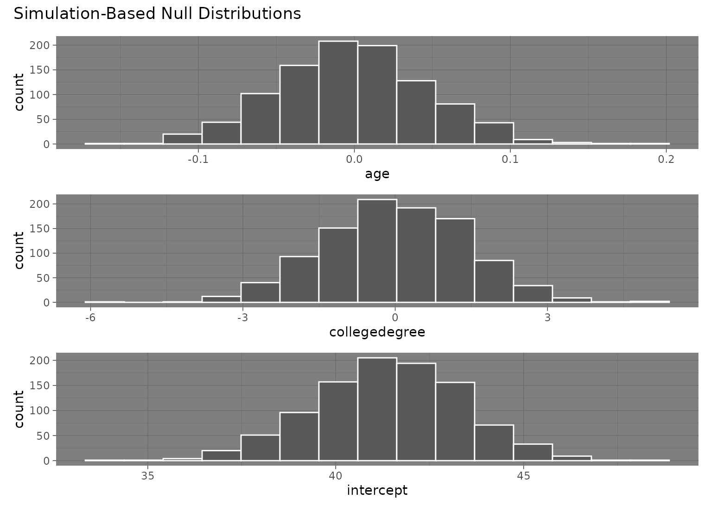
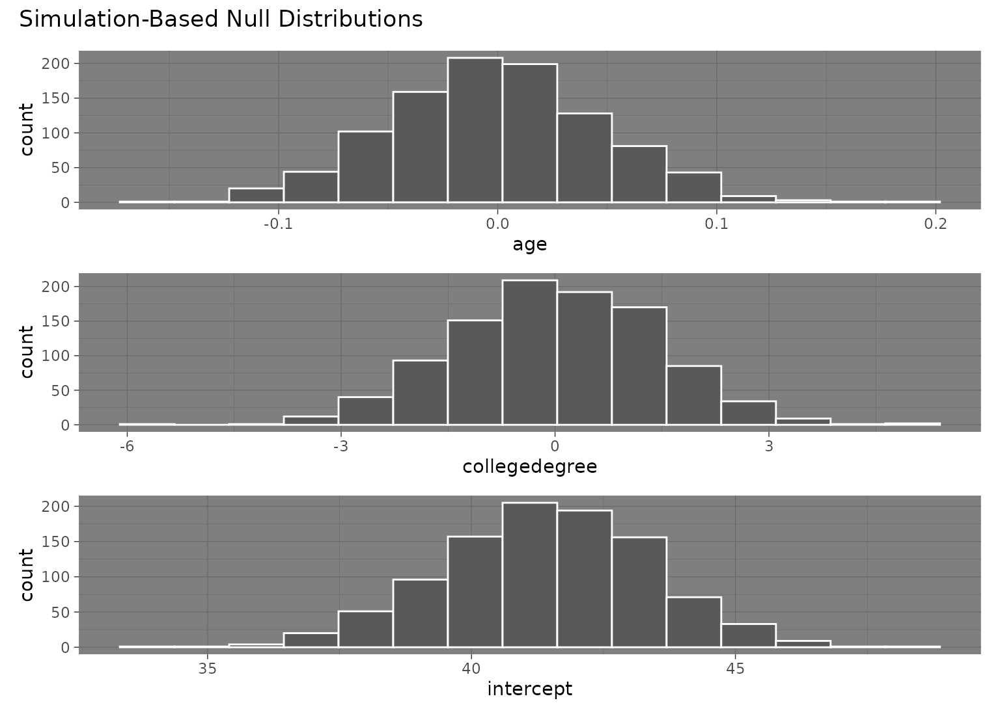

Visualize the distribution of the simulation-based inferential statistics or the theoretical distribution (or both!).
Learn more in vignette("infer").
visualize(data, bins = 15, method = "simulation", dens_color = "black", ...)
visualise(data, bins = 15, method = "simulation", dens_color = "black", ...)Arguments
- data
A distribution. For simulation-based inference, a data frame containing a distribution of
calculate()d statistics orfit()ted coefficient estimates. This object should have been passed togenerate()before being supplied orcalculate()tofit(). For theory-based inference, the output ofassume().- bins
The number of bins in the histogram.
- method
A string giving the method to display. Options are
"simulation","theoretical", or"both"with"both"corresponding to"simulation"and"theoretical". Ifdatais the output ofassume(), this argument will be ignored and default to"theoretical".- dens_color
A character or hex string specifying the color of the theoretical density curve.
- ...
Other arguments passed along to \ggplot2\ functions.
Value
For calculate()-based workflows, a ggplot showing the simulation-based
distribution as a histogram or bar graph. Can also be used to display
theoretical distributions.
For assume()-based workflows, a ggplot showing the theoretical distribution.
For fit()-based workflows, a patchwork object
showing the simulation-based distributions as a histogram or bar graph.
The interface to adjust plot options and themes is a bit different
for patchwork plots than ggplot2 plots. The examples highlight the
biggest differences here, but see patchwork::plot_annotation() and
patchwork::&.gg for more details.
Details
In order to make the visualization workflow more straightforward
and explicit, visualize() now only should be used to plot distributions
of statistics directly. A number of arguments related to shading p-values and
confidence intervals are now deprecated in visualize() and should
now be passed to shade_p_value() and shade_confidence_interval(),
respectively. visualize() will raise a warning if deprecated arguments
are supplied.
See also
Examples
# generate a null distribution
null_dist <- gss %>%
# we're interested in the number of hours worked per week
specify(response = hours) %>%
# hypothesizing that the mean is 40
hypothesize(null = "point", mu = 40) %>%
# generating data points for a null distribution
generate(reps = 1000, type = "bootstrap") %>%
# calculating a distribution of means
calculate(stat = "mean")
# or a bootstrap distribution, omitting the hypothesize() step,
# for use in confidence intervals
boot_dist <- gss %>%
specify(response = hours) %>%
generate(reps = 1000, type = "bootstrap") %>%
calculate(stat = "mean")
# we can easily plot the null distribution by piping into visualize
null_dist %>%
visualize()

# we can add layers to the plot as in ggplot, as well...
# find the point estimate---mean number of hours worked per week
point_estimate <- gss %>%
specify(response = hours) %>%
calculate(stat = "mean")
# find a confidence interval around the point estimate
ci <- boot_dist %>%
get_confidence_interval(point_estimate = point_estimate,
# at the 95% confidence level
level = .95,
# using the standard error method
type = "se")
# display a shading of the area beyond the p-value on the plot
null_dist %>%
visualize() +
shade_p_value(obs_stat = point_estimate, direction = "two-sided")

# ...or within the bounds of the confidence interval
null_dist %>%
visualize() +
shade_confidence_interval(ci)

# plot a theoretical sampling distribution by creating
# a theory-based distribution with `assume()`
sampling_dist <- gss %>%
specify(response = hours) %>%
assume(distribution = "t")
visualize(sampling_dist)

# you can shade confidence intervals on top of
# theoretical distributions, too---the theoretical
# distribution will be recentered and rescaled to
# align with the confidence interval
visualize(sampling_dist) +
shade_confidence_interval(ci)

# to plot both a theory-based and simulation-based null distribution,
# use a theorized statistic (i.e. one of t, z, F, or Chisq)
# and supply the simulation-based null distribution
null_dist_t <- gss %>%
specify(response = hours) %>%
hypothesize(null = "point", mu = 40) %>%
generate(reps = 1000, type = "bootstrap") %>%
calculate(stat = "t")
obs_stat <- gss %>%
specify(response = hours) %>%
hypothesize(null = "point", mu = 40) %>%
calculate(stat = "t")
visualize(null_dist_t, method = "both")
#> Warning: Check to make sure the conditions have been met for the theoretical method. {infer} currently does not check these for you.

visualize(null_dist_t, method = "both") +
shade_p_value(obs_stat, "both")
#> Warning: Check to make sure the conditions have been met for the theoretical method. {infer} currently does not check these for you.

# \donttest{
# to visualize distributions of coefficients for multiple
# explanatory variables, use a `fit()`-based workflow
# fit 1000 models with the `hours` variable permuted
null_fits <- gss %>%
specify(hours ~ age + college) %>%
hypothesize(null = "independence") %>%
generate(reps = 1000, type = "permute") %>%
fit()
null_fits
#> # A tibble: 3,000 × 3
#> # Groups: replicate [1,000]
#> replicate term estimate
#> <int> <chr> <dbl>
#> 1 1 intercept 40.6
#> 2 1 age 0.0234
#> 3 1 collegedegree -0.379
#> 4 2 intercept 43.9
#> 5 2 age -0.0584
#> 6 2 collegedegree -0.496
#> 7 3 intercept 38.5
#> 8 3 age 0.0789
#> 9 3 collegedegree -0.810
#> 10 4 intercept 43.0
#> # … with 2,990 more rows
# visualize distributions of resulting coefficients
visualize(null_fits)
 # the interface to add themes and other elements to patchwork
# plots (outputted by `visualize` when the inputted data
# is from the `fit()` function) is a bit different than adding
# them to ggplot2 plots.
library(ggplot2)
# to add a ggplot2 theme to a `calculate()`-based visualization, use `+`
null_dist %>% visualize() + theme_dark()
# the interface to add themes and other elements to patchwork
# plots (outputted by `visualize` when the inputted data
# is from the `fit()` function) is a bit different than adding
# them to ggplot2 plots.
library(ggplot2)
# to add a ggplot2 theme to a `calculate()`-based visualization, use `+`
null_dist %>% visualize() + theme_dark()
 # to add a ggplot2 theme to a `fit()`-based visualization, use `&`
null_fits %>% visualize() & theme_dark()

# }
# More in-depth explanation of how to use the infer package
if (FALSE) {
vignette("infer")
}
# to add a ggplot2 theme to a `fit()`-based visualization, use `&`
null_fits %>% visualize() & theme_dark()

# }
# More in-depth explanation of how to use the infer package
if (FALSE) {
vignette("infer")
}